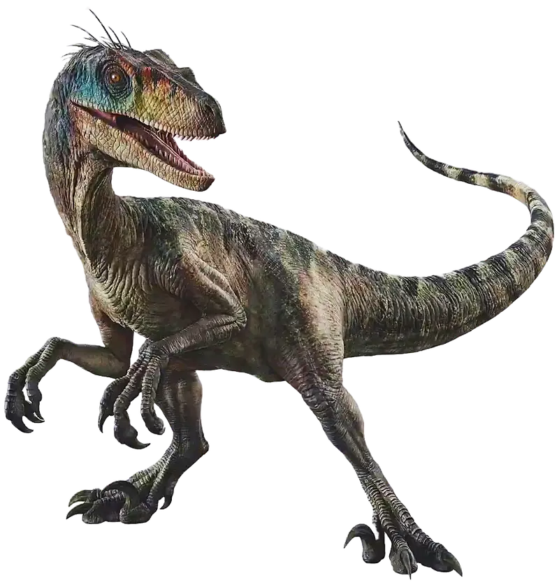

Velociraptor Mongoliensis

Información General
Nombre científico: Velociraptor mongoliensis
Significado del nombre: "Ladrón veloz"
Periodo: Cretácico Superior (hace unos 75 millones de años)
Lugar donde vivió: Mongolia (Asia)
Dieta: Carnívoro
Características Físicas
- Longitud: Aproximadamente 2 metros
- Altura: Unos 50 cm a la cadera
- Peso: Entre 15 y 20 kg
- Característica especial: Poseía una gran garra curva en cada pata trasera
- Plumas: Sí tenía plumas (aunque no podía volar)
Datos Interesantes
- Era mucho más pequeño de lo que se muestra en las películas de Jurassic Park.
- Su tamaño real era similar al de un pavo grande o un perro mediano.
- La famosa garra en forma de hoz la usaba para clavar a sus presas.
- Se cree que era un animal inteligente y ágil.
- No está completamente comprobado que cazara en manada.